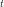
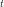
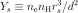
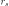
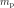
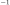
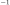
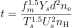
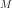

8.1.7. Supernova remnant model theory¶
For the calculation of SNR models we follow Kaastra & Jansen (1993). But also here we make some modifications in the implementation.
The X-ray spectrum of a SNR is characterised in lowest order by its
average temperature  , ionisation parameter
, ionisation parameter  and
emission measure
and
emission measure  . If one calculates a specific model however,
these average values are not known a priori. A relevant set of input
parameters could be the interstellar density, the shock radius and the
explosion energy. These are the parameters used by KJ. A disadvantage is
that this choice is not suitable for spectral fitting: changing one of
the parameters gives correlated changes in , and
, which is an undesirable feature in spectral fitting. KJ
solved this by inputting a guess of , , and
and using these guess parameters as the fitting parameters. After
fitting, the model had to be calculated another time in order to find
the relation between guessed and true parameters. here we take another
choice. We will select input parameters which scale with ,
and respectively but are connected to the SNR
parameters independent of the hydrodynamical model. The first parameter
is the shock temperature
. If one calculates a specific model however,
these average values are not known a priori. A relevant set of input
parameters could be the interstellar density, the shock radius and the
explosion energy. These are the parameters used by KJ. A disadvantage is
that this choice is not suitable for spectral fitting: changing one of
the parameters gives correlated changes in , and
, which is an undesirable feature in spectral fitting. KJ
solved this by inputting a guess of , , and
and using these guess parameters as the fitting parameters. After
fitting, the model had to be calculated another time in order to find
the relation between guessed and true parameters. here we take another
choice. We will select input parameters which scale with ,
and respectively but are connected to the SNR
parameters independent of the hydrodynamical model. The first parameter
is the shock temperature
the second the shock ionisation parameter defined by
where  is the electron density before the shock (for a
completely ionised gas), and  the age of the remnant. Further
we define the shock reduced emission measure by
is the electron density before the shock (for a
completely ionised gas), and  the age of the remnant. Further
we define the shock reduced emission measure by

where  is the main shock radius, and  the distance
to the source. We have introduced here also the electron density
the distance
to the source. We have introduced here also the electron density
 instead of the more natural Hydrogen density, because this
allows an efficient use of the model for spectral fitting: if one fits a
spectrum with variable chemical abundances, then using the current
scaling we need to calculate (for a given , and
) the relative ion concentrations only once; for other
abundances, the relative concentrations may be simply scaled without a
need to redo completely the ionisation balance calculations. Finally we
introduced the distance in the definition of in order to
allow an easy comparison with spectra observed at earth. These 3 input
parameters , and will serve as input
parameters for all hydrodynamical models. They are linked to other
parameters as follows:
instead of the more natural Hydrogen density, because this
allows an efficient use of the model for spectral fitting: if one fits a
spectrum with variable chemical abundances, then using the current
scaling we need to calculate (for a given , and
) the relative ion concentrations only once; for other
abundances, the relative concentrations may be simply scaled without a
need to redo completely the ionisation balance calculations. Finally we
introduced the distance in the definition of in order to
allow an easy comparison with spectra observed at earth. These 3 input
parameters , and will serve as input
parameters for all hydrodynamical models. They are linked to other
parameters as follows:
(1)¶
where is a dimensionless factor representing the average mass in units of a proton mass per Hydrogen atom ( with  the proton mass), and is another dimensionless factor, representing the ratio of electron plus ion density over the Hydrogen density. Further, is a model-dependent dimensionless scaling factor which is given by
with the velocity scaling discussed below and  the density jump at the main shock front, which depends upon the
Hydrodynamical model. Another scaling law links the gas velocity to the
temperature:
the density jump at the main shock front, which depends upon the
Hydrodynamical model. Another scaling law links the gas velocity to the
temperature:
with  the post-shock gas velocity (not to be confused with
the shock velocity!). The velocity scaling factor is given by
the post-shock gas velocity (not to be confused with
the shock velocity!). The velocity scaling factor is given by
with the understatement that for the Sedov and Solinger model one should
take formally the limit  .
.
The explosion energy  is linked to the other parameters by
is linked to the other parameters by
where  is the dimensionless energy integral introduced by
Sedov. The value of depends both upon the hydrodynamical
model and the value for
is the dimensionless energy integral introduced by
Sedov. The value of depends both upon the hydrodynamical
model and the value for  and
and  , the density gradient
scale heights of the interstellar medium and the stellar ejecta.
, the density gradient
scale heights of the interstellar medium and the stellar ejecta.
If we express in keV, in
 s, in
, in units of
s, in
, in units of  m,
m,
 in , in units
of
in , in units
of  m and in s, we obtain from (1) the
value for the proton mass of =
(
m and in s, we obtain from (1) the
value for the proton mass of =
(
 ).
Using this value and defining
).
Using this value and defining
 , the scaling laws for
SNRs may be written as
, the scaling laws for
SNRs may be written as

where  is the mass integral, and  is the
dimensionless mass integral (defined by
).
is the
dimensionless mass integral (defined by
).